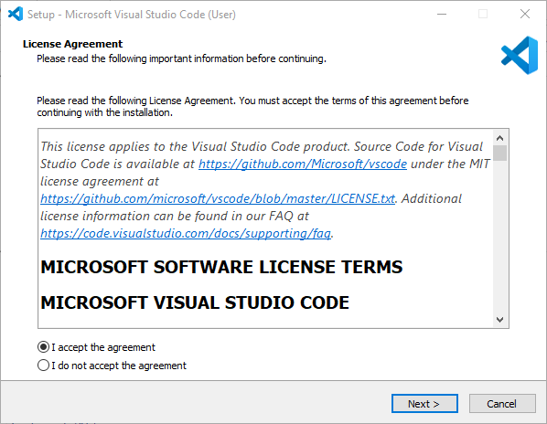
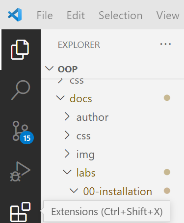
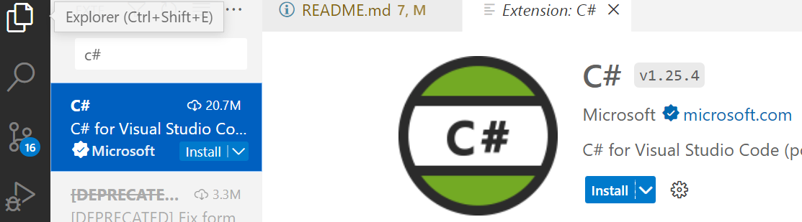
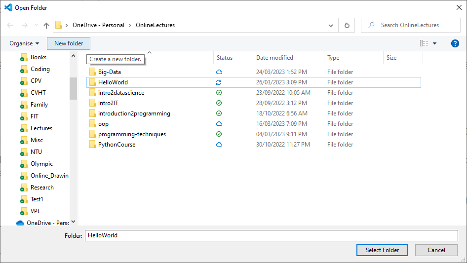
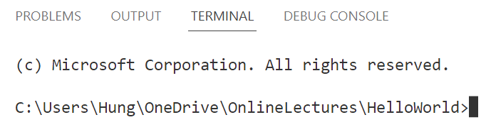
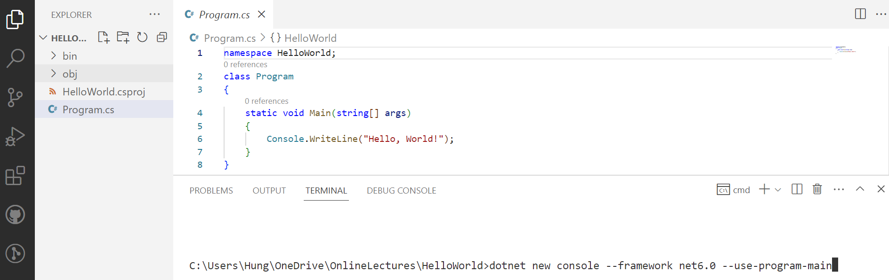
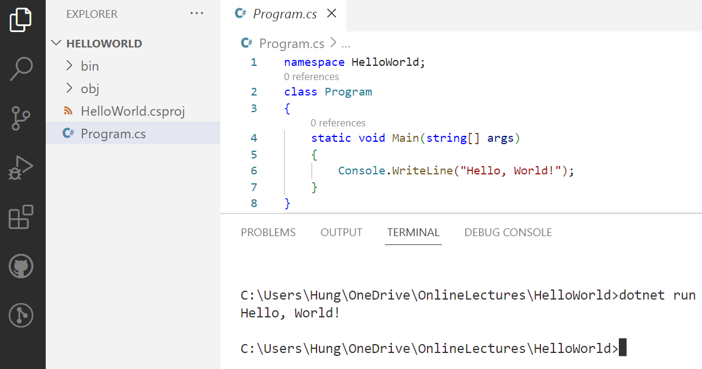

Tạo ứng dụng C# với Visual Studio Code¶
Sơ lược về Visual Studio Code¶
- Gọn nhẹ, với nhiều tính năng cao cấp: gợi ý mã lệnh thông minh (IntelliSense code completion), quản lý phiên bản mã nguồn phân tán (Git).
- Khả năng mở rộng để lập trình với nhiều ngôn ngữ, gồm cả C#.
- Có thể chạy VS Code trên Windows, macOS và Linux.
- Miễn phí & mã nguồn mở.
- VS Code là công cụ viết mã nguồn (code editor), không phải là IDE đầy đủ. Để lập trình C# với VS Code, cần cài đặt thêm các công cụ sau:
- Gói mở rộng (extension) hỗ trợ viết mã nguồn C#.
- .NET: VS Code hỗ trợ .NET Core, hoặc .NET Framework 4.5.2 trở lên.
Cài đặt VS Code¶
- Tải về bản cài đặt VS Code cho Windows, bản cài đặt người dùng (User).
-
Mở file cài đặt vừa tải xuống (tên file dạng
VSCodeUserSetup-{version}.exe, chẳng hạn version=x64-1.61.2). -
License Agreement: Chọn "Accept the agreement" và "Next".

- Ready to Install: Chọn "Install".

Ở chế độ cài đặt người dùng (User), VS Code sẽ được cài mặc định ở
C:\users\{username}\AppData\Local\Programs\Microsoft VS Code, vớiusernamelà tên tài khoản người dùng. Muốn cài đặt VS Code cho tất cả người dùng, tải file cài đặt dành cho admin. Khi đó VS Code sẽ được cài ởProgram Files.
Cài C# extension¶
- Khởi động VS Code.
- Chọn biểu tượng "Extensions" (Ctrl+Shift+X)

Tại ô tìm kiếm, nhập C#. Trong danh sách các extensions hiện ra, chọn gói "C# for Visual Studio Code (powered by OmniSharp)" của Microsoft và nhấn Install.

Tạo ứng dụng .NET Console/C# với VS Code¶
Yêu cầu¶
Bảo đảm máy tính đã cài đặt các công cụ sau:
- .NET 6 trở lên.
- Visual Studio Code với C# extension.
Tạo ứng dụng Console¶
- Khởi động Visual Studio Code.
- Chọn File > Open Folder.
- Trong hộp hội thoại Open Folder, tạo một thư mục mới đặt tên phù hợp với dự án, chẳng hạn
HelloWorld

- Chọn Select Folder để tạo app trong thư mục vừa tạo. Nếu được hỏi
Do you trust the authors of the files in this folder?thì chọnYes, I trust the authors. - Mở cửa sổ dòng lệnh (Terminal): Chọn View > Terminal.

- Trong cửa sổ Terminal, nhập lệnh sau:
dotnet new console --framework net6.0 --use-program-main
Trong trong file mã nguồn Program.cs VS Code tạo sẵn một lớp Program, trong đó có một phương thức Main. Khi chạy ứng dụng, các lệnh trong hàm Main sẽ được thực hiện.

VS Code tạo sẵn dòng lệnh in ra câu "Hello, World!".
Chạy ứng dụng¶
- Trong cửa sổ Terminal nhập lệnh sau để chạy ứng dụng:
dotnet run

Liên kết VS Code với tài khoản Github¶
- Chọn biểu tượng "Extensions" (Ctrl+Shift+X), nhập Github vào ô tìm kiếm, chọn gói "GitHub Pull Requests and Issues" của Github và nhấn "Install".